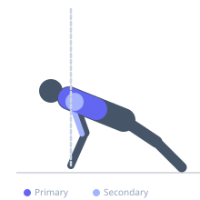
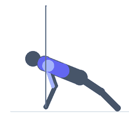

Exercise guide / Band-Resisted Push-Up
Band-Resisted Push-Up
A push-up variation where a resistance band is looped across the upper back and secured under both hands, adding accommodating resistance that increases toward the top of the press. Because band resistance is proportional to stretch, the lockout position receives the most resistance, training the pectorals and triceps through a fuller strength curve than bodyweight alone provides.
Primary muscles
pectoralis major sternal
pectoralis major clavicular
Secondary muscles
deltoid anterior
triceps lateral head
triceps medial head
Stabilizers
pectoralis minor
transverse abdominis
Equipment
Resistance Band (Loop / Mini Band)


Starting position
- Loop a resistance band around your upper back at shoulder blade level. Grasp each end of the band under the corresponding hand in a standard push-up position. Hands are shoulder-width apart.
Setup
- Choose a band tension that makes the last 2–3 reps of each set challenging. The band should have moderate tension even at the bottom position.
Steps
- Step 1: Begin in a high plank with the band looped across your upper back and held under palms. Body is straight from head to heels.
- Step 2: Lower your chest to the floor, keeping elbows at a 45-degree angle from the torso. Band tension decreases at the bottom.
- Step 3: Press powerfully back up — band tension increases as you rise toward lockout.
- Step 4: Fully extend the arms at the top, feeling maximum band resistance. Repeat.
Coaching cues
- Accelerate through the top — the band gets harder, so push harder
- Keep wrists stacked under elbows throughout
Breathing
- Inhale on the descent, exhale on the press upward.
Range of motion
- Full range from chest to floor to full arm extension. Accommodating resistance rewards full lockout.
Tempo
- 2-0-1-0 (2s descent, explosive press)
Common mistakes
- Band sliding up to the neck during the set — reposition before starting
- Choosing a band so heavy it compromises depth
- Sagging at the hips, reducing core engagement
Safety
- Ensure band is securely positioned across the upper back before beginning
- If band slips toward neck during the set, stop and reposition
Training
- strength: 5–10 reps
- hypertrophy: 10–20 reps
- strength: 3–5 sets
- hypertrophy: 3–4 sets
- Rest: {'strength': 120, 'hypertrophy': 75}